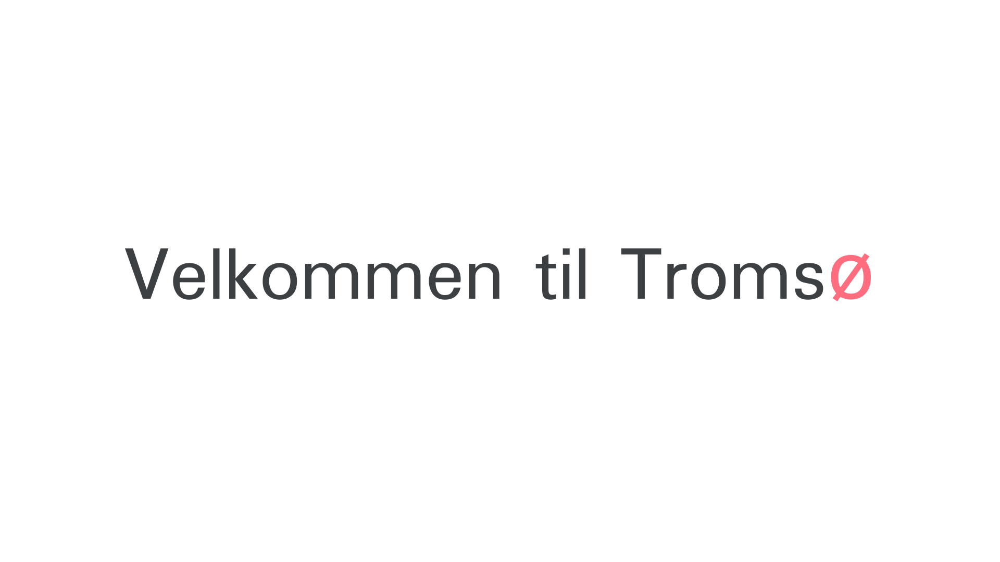
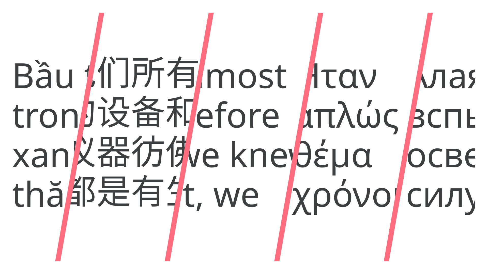
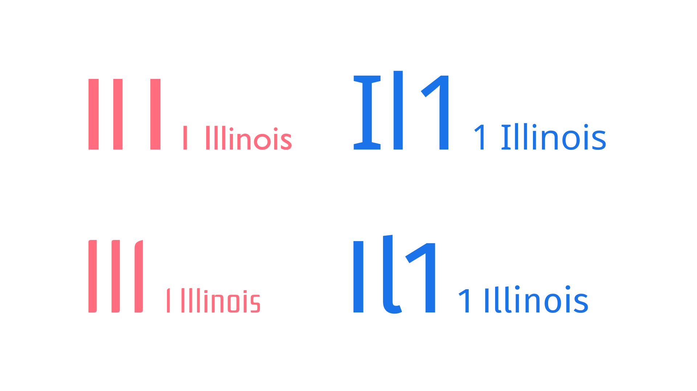
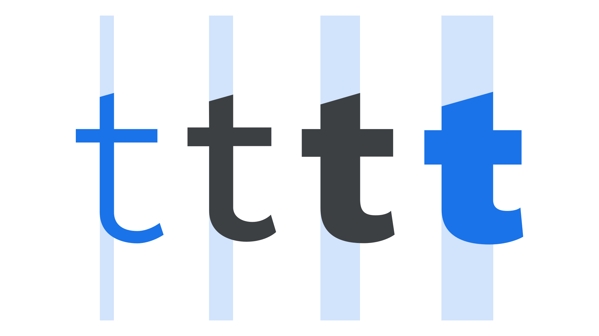
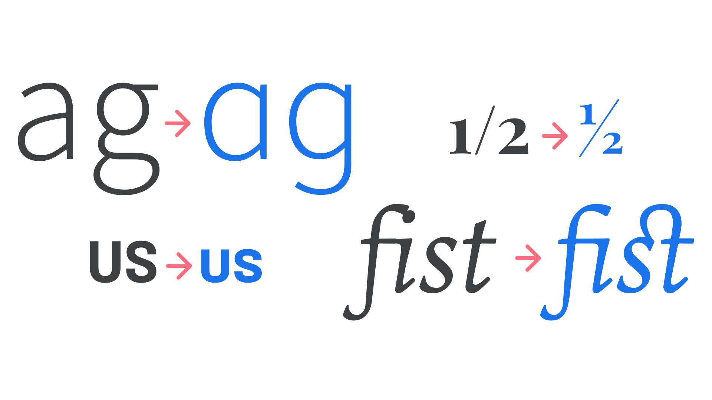

Choosing reliable typefaces
By Elliot Jay Stocks · Google Fonts Knowledge.
Reviewed by Bruce Willen, David Brezina, Doug Wilson, Ellen Lupton, Frank Rausch, Jessica Hische, Mark Boulton, Matthew Smith, Micah Rich, Mike Kus, Thomas Jockin, Thomas Phinney.
Original article · Source on GitHub · CC BY-SA 4.0. Text, illustrations and existing credits reproduced from the licensed Knowledge repository. Open Shelf adapted the layout and links; these adaptations are also CC BY-SA 4.0. No endorsement implied.
In our previous article we looked at the emotive considerations—how typefaces make us feel—but warned that the technical considerations should be taken into account as soon as possible when choosing type. The rest of this module contains articles that could be grouped as “technical considerations,” and in this article in particular, we’re going to look at how those considerations make a typeface truly reliable or not.
Ideally, a reliable typeface should include:
- Language support
- Legible details
- Multiple weights and styles
- Alternate characters and other OpenType features.
Let’s explore each in turn:
Language support
There’s no point falling in love with a typeface and using it for a brand if it doesn’t contain that one non-Latin character we need for a regional office address in the website’s footer—it’ll get substituted, stand out, and stop the brand from looking professional.

While a small glyph set might be fine for a logo, it’ll soon fall apart if we try and use such a limited typeface for our main text—especially if we’re working on a digital product that allows for user input, or any website powered by a content management system (i.e., most).
When working with a language that uses Latin script, such as English, be sure to use a typeface that at least has support for western European languages, but also ideally support for central, eastern European, Vietnamese and African languages, too. It’s all too easy for us to forget the needs of users working with a different language—or a different script entirely.

For multinationals, where the brand identity will need to travel not just between different languages, but also between different scripts or writing systems, we should consider typefaces or type families that cater to this—although they are less common.
The Noto fonts are an effort to enable harmonious, aesthetic, and typographically correct global communication, in more than 1,000 languages and over 150 writing systems.
Legible details
To state that type should be legible is obvious, of course. But, even so, in many regarded and well-known typefaces, some glyphs are remarkably similar (these are sometimes called homoglyphs). And, because this similarity leads to potential ambiguity over what characters we’re reading, their design can be detrimental to the overall legibility of text set in these typefaces.
When selecting a typeface—especially a sans serif—it’s useful to assess the similarities between the uppercase “I”, lowercase “l”, and numeral “1” characters. Because the underlying structure of these letters is very close, it’s up to the type designer to distinguish them adequately from one another.

Why do these details matter? Imagine missing your flight because it wasn’t clear whether you should proceed to Gate I or Gate 1. Even if a reader is able to work out which character they’re reading, just a pause in the reading experience can lead to cognitive dissonance.
Multiple weights and styles (and widths, and optical sizes...)
It’s entirely possible for a typeface to be suitable for a project—especially something like a logo—even if it has only one weight. However, to be usable in most scenarios, having a range of weights and styles is preferable. Regular, italic, bold, and bold italic cover the bases, but the more weights (and/or grades) a typeface has, the more flexibility is given to the designer. And if those weights are accessible via the weight axis in a variable font, even better.
When we talk about styles, we usually think of italic forms. However, small caps are also a kind of style, and having them present in the type offers even more options. (Until the mid 20th century, small caps were often considered more essential than bold fonts.)

Let’s not stop there! Multiple widths and optical sizes allow for even finer control over our typesetting, and often negate the need for a secondary typeface.

We go into all of these benefits in our dedicated articles on the subjects:
- “Exploring typefaces with multiple weights or grades”
- “Exploring width in type”
- “Choosing typefaces that have optical sizes”
And, as so many of these features can be manipulated with variable fonts, be sure to read “Introducing variable fonts.”
Alternate characters and other OpenType features
Multiple versions of characters (accessed via OpenType) help make a typeface more robust. Some of those can certainly be legibility and readability aids, such as ligatures, contextual alternates, the aforementioned small caps, fractions, and different numeral forms; others can be purely aesthetic, such as swashes, or stylistic sets. And let’s not forget kerning! A well-spaced font file, with thorough kerning-pair data built in, is often what can separate good fonts from bad fonts.

We explore OpenType in more depth in our article “OpenType features in practice.”
Thanks to the work of professional type designers, who often invest years of work in creating truly robust typefaces, many of the fonts we have at our disposal offer us a great deal of versatility. Understanding all that can potentially be found in a typeface lets us properly assess how reliable (or unreliable) they can be for our projects.
A note on fonts named “Pro”
You might notice that some fonts have the “Pro” suffix. This was a naming convention that was developed by Adobe around the year 2000 as a way of differentiating between older PostScript versions of their fonts (no suffix), and newer OpenType versions: Either “Std” for standard, which might have merged supplemental fonts, but with no additional characters or language support), or “Pro” versions which were reworked with bigger character sets. A similar system was adopted by Monotype at around the same time.
Since then, however, the idea of what “Pro” actually means has evolved as it’s been adopted by other foundries and font distributors. In practice, any type designer can add “Pro” to the name of their font and use it as a marketing tactic, so it pays to be aware of what the name convention can and cannot mean.
We also often use the words “professional” or “pro” to talk about how well-made a font is, and that level of quality has nothing to do with how the font is named. For more information, please read Mary Catherine Pflug’s article “What’s in a name? The perception of Pro” and “Quality type: how to spot fonts worth your money” from TypeTogether.